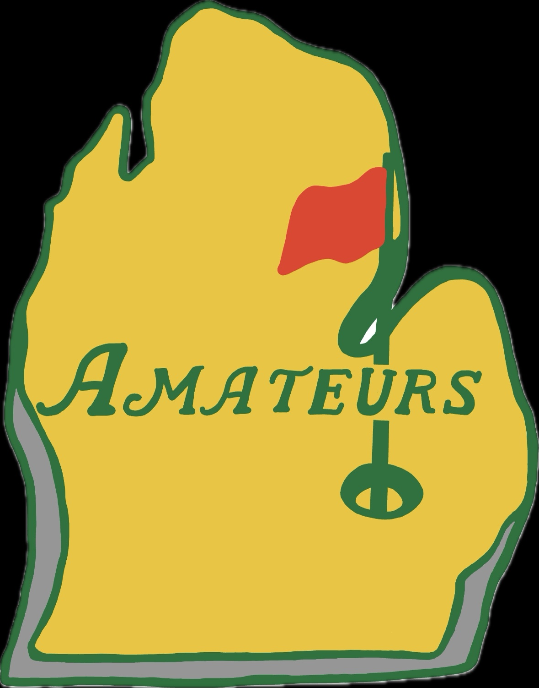
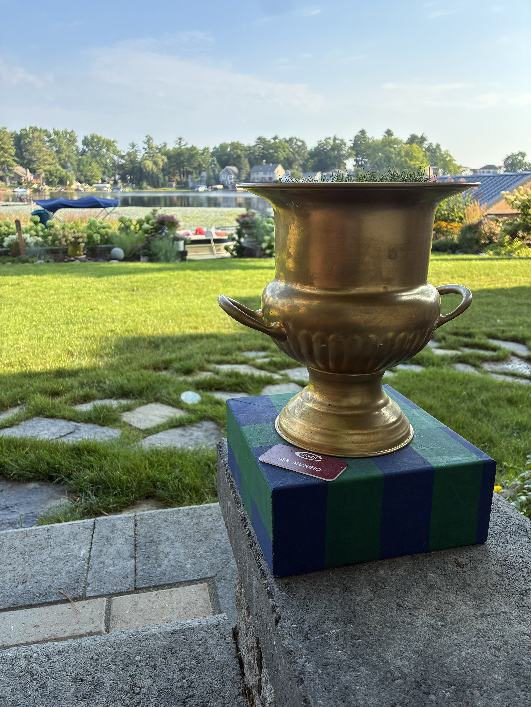

The Invitational
Andrea and Dillon created The Amateurs during the spring of 2021 as a way to have a family gathering that was COVID-19 approved. Our first year was a smaller group and we played for fun. After the success of that first year, the event turned competitive and rebranded in 2022 with an official logo and the creation of our trophy, the MacCallum Cup. Since then, we have created an Instagram page, begun hosting team drafts, and created a merchandise line heavily sought after by all members. Starting in 2027, this invitational will be hosted every year on the third Saturday of June.

Official Logo
The official Amateurs logo was designed in 2022 alongside the rebrand to imitate The Masters tournament. This logo has defined the visual identity of the invitational ever since.

The MacCallum Cup
Commissioned in 2022, the MacCallum Cup is awarded annually to the winning team, who signs there name on the base. Each year the trophy is filled with a pot of turfgrass, creating an educational opportunity.
Most participants are not serious golfers, so the invitational has combined real golf with hole-by-hole side games to level the playing field and keep things competitive and fun. In 2023, the group traveled overseas to reconnect with our ancestors and play a special Scottish edition contested on the Himalayas Putting Course at St. Andrews — the home of golf.
While the teams, the team logos, and the host course may change every year, the pursuit of The MacCallum Cup does not. Each year we crown a new champion and continue adding to our history.